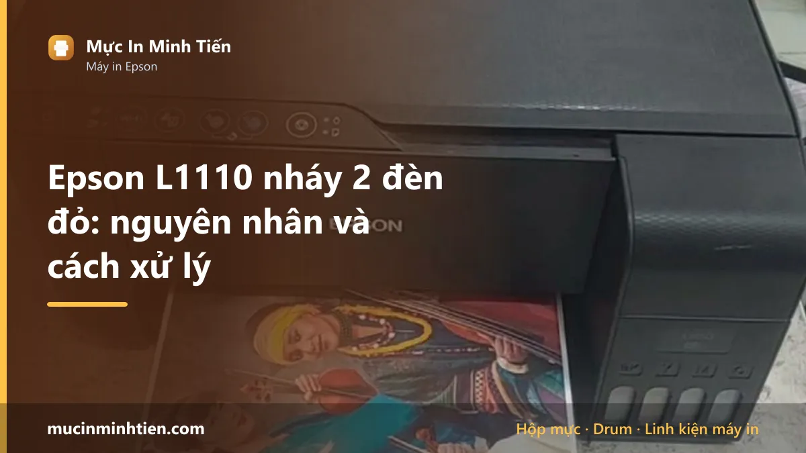
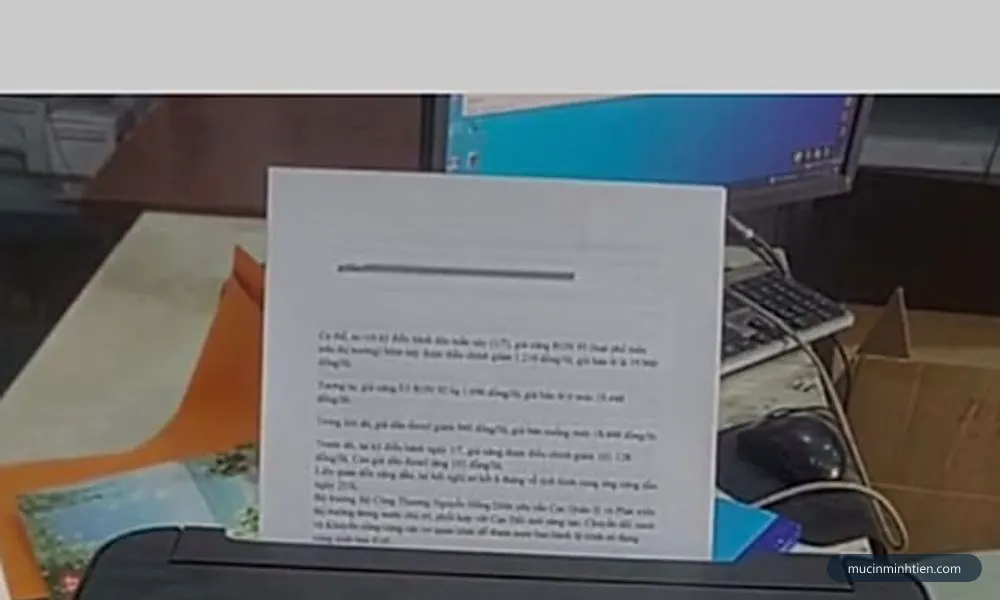
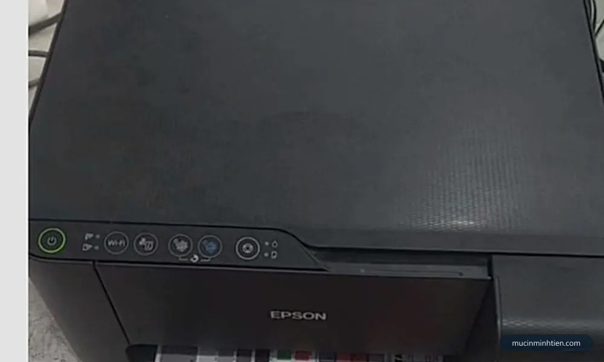
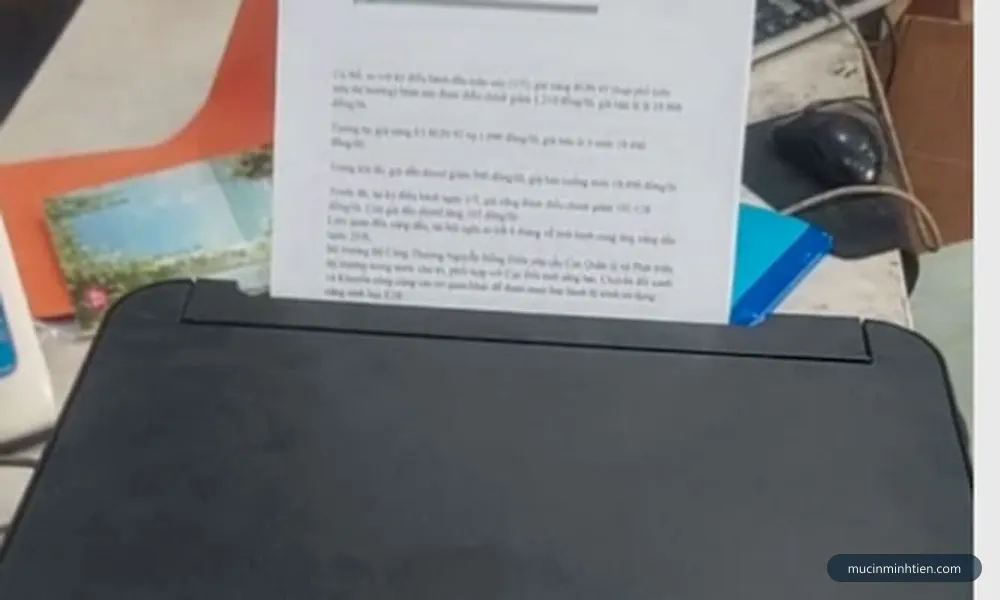
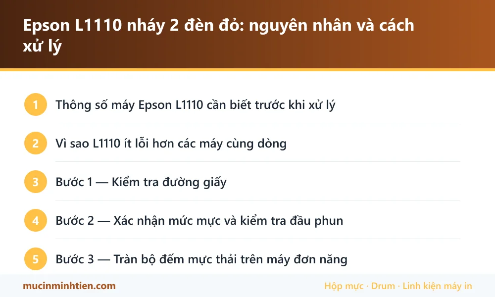

Epson L1110 nháy 2 đèn đỏ: nguyên nhân và cách xử lý

Epson L1110 nháy 2 đèn đỏ chủ yếu do kẹt giấy, chưa xác nhận mức mực sau khi châm, hoặc tràn bộ đếm mực thải. Đây là máy in đơn năng — không scan, không copy — nên bảng đèn đơn giản hơn dòng L3110, và cũng ít khả năng lỗi hơn vì không có cụm scan.
Thông số máy Epson L1110 cần biết trước khi xử lý
Biết đúng máy mình đang dùng loại nào giúp khỏi mua nhầm vật tư và khỏi làm theo hướng dẫn của dòng khác.
| Hạng mục | Chi tiết |
|---|---|
| Kiểu máy | Đơn năng — chỉ in, không scan, không copy |
| Kết nối | Chỉ USB |
| Mực dùng | Epson 003 — bốn màu BK / C / M / Y |
| Màn hình | Không có. Đọc lỗi qua đèn giấy và đèn mực |
| Ưu điểm khi sửa | Không có cụm scan nên ít điểm hỏng hơn L3110, L3150 |
Vì sao L1110 ít lỗi hơn các máy cùng dòng
L1110 là bản rút gọn nhất của dòng EcoTank: chỉ in, không scan, không copy, không Wi-Fi. Ít bộ phận hơn nghĩa là ít chỗ hỏng hơn.
Cụ thể, máy này không gặp các lỗi liên quan tới cụm scan mà L3110 và L3150 hay bị: kẹt giấy ở khay nạp tài liệu, lỗi cảm biến nắp scan, hay lỗi băng cáp scan. Toàn bộ vấn đề của L1110 gói gọn trong ba nhóm: đường giấy, mực và đầu phun, bộ đếm mực thải.
Hệ quả thực tế: khi L1110 nháy đèn, xác suất bạn tự xử lý được cao hơn hẳn so với máy đa năng.

Bước 1 — Kiểm tra đường giấy
L1110 chỉ có khay nạp phía sau, đường giấy ngắn và thẳng nên dễ soi hơn máy đa năng.
- Tắt máy, rút điện, đợi vài phút.
- Nhấc nắp trên, soi đèn từ khay sau xuống khe ra giấy trước.
- Kiểm tra kỹ vùng ngay dưới cụm đầu phun — mảnh giấy hay mắc ở đây.
- Gỡ theo chiều giấy đi, không kéo ngược.
- Lau con lăn cao su bằng khăn ẩm nếu thấy bám bụi giấy trắng.
Vì đường giấy ngắn, nếu soi kỹ mà không thấy gì thì gần như chắc chắn nguyên nhân không phải kẹt giấy — chuyển sang bước 2 thay vì tháo máy.

Bước 2 — Xác nhận mức mực và kiểm tra đầu phun
Giống mọi máy dòng L, L1110 đếm mực bằng phần mềm chứ không đo thật. Châm mực xong phải giữ nút giọt mực khoảng năm giây để đặt lại mức, nếu không máy vẫn báo cạn.
Sau khi xác nhận, in một trang Nozzle Check để xem đầu phun có thông không. Bản in thiếu một dải màu hoặc đứt nét nghĩa là vòi phun đang tắc — chạy Head Cleaning tối đa ba lần rồi để máy nghỉ, đừng chạy liên tục vì mỗi lần đều xả mực vào tấm thấm.
Thứ tự đúng và cách tiết kiệm mực nhất có ở bài vệ sinh đầu phun máy in Epson.

Bước 3 — Tràn bộ đếm mực thải trên máy đơn năng
L1110 in nhiều mà không scan, nên với nhiều người đây là máy chạy tải cao nhất trong nhà. Bộ đếm mực thải vì thế đầy nhanh hơn người ta tưởng.
Khi máy báo Service Required và hai đèn nháy đồng thời không dứt, đó là bộ đếm đã tới ngưỡng. Máy không hỏng — nó tự khoá để mực không tràn ra ngoài.
Xử lý đúng gồm hai việc làm cùng nhau: đặt lại bộ đếm, và vệ sinh hoặc thay tấm thấm mực thải. Bỏ qua vế thứ hai thì mực sẽ rỉ ra đáy máy và bàn làm việc. Đây là lý do chúng tôi không khuyến khích tự chạy phần mềm tải trên mạng: phần mềm chỉ làm được vế thứ nhất.
Bảng tra: dấu hiệu nào ứng với nguyên nhân nào
| Dấu hiệu | Nguyên nhân | Cách xử lý | Chi phí |
|---|---|---|---|
| Đèn giấy nháy, có tiếng kéo giấy | Kẹt giấy hoặc dị vật | Soi đèn, gỡ theo chiều giấy đi | 0 – 150.000 đ |
| Báo kẹt nhưng đường giấy sạch | Con lăn bám bụi giấy | Lau con lăn bằng khăn ẩm | 0 đ |
| Châm mực xong vẫn báo cạn | Chưa đặt lại mức mực | Giữ nút giọt mực 5 giây | 0 đ |
| Hai đèn nháy đồng thời không dứt | Tràn bộ đếm mực thải | Đặt lại bộ đếm + thay tấm thấm | từ 200.000 đ |
| Nozzle Check thiếu một dải màu | Tắc vòi phun | Head Cleaning tối đa 3 lần | 0 – 150.000 đ |
| Máy không lên nguồn kèm nháy đèn | Nguồn hoặc bo mạch | Cần kỹ thuật viên đo | Cần kiểm tra |
Vật tư cho Epson L1110 có sẵn tại kho 77 Bắc Hải, Phường Diên Hồng, TP.HCM — xem bảng giá 773 mã hoặc gọi 0915 510 203 kèm model máy.
Khi nào nên gọi kỹ thuật viên
- Đường giấy sạch, đã xác nhận mực mà đèn vẫn nháy
- Máy báo Service Required — cần xử lý cả bộ đếm lẫn tấm thấm
- Chạy Head Cleaning ba lần vẫn thiếu màu
- Có mực rỉ ra đáy máy hoặc mặt bàn
- Máy không lên nguồn ổn định
Báo giá xử lý Epson L1110 tận nơi
| Hạng mục | Giá tham khảo |
|---|---|
| Kiểm tra, vệ sinh đường giấy và con lăn | từ 100.000 đ |
| Vệ sinh đầu phun chuyên sâu | từ 150.000 đ |
| Đặt lại bộ đếm mực thải kèm vệ sinh tấm thấm | từ 200.000 đ |
| Châm mực 003 | từ 60.000 đ/màu |
Kỹ thuật viên kiểm tra và báo giá trước khi làm — xem cam kết ở dịch vụ sửa máy in tận nơi TP.HCM.
Cách phòng tránh tái phát
- In đều đặn. Máy đơn năng thường bị bỏ quên lâu hơn máy đa năng, và mực khô trong đầu phun là bệnh số một của dòng phun.
- Hạn chế Head Cleaning. Mỗi lần chạy đẩy bộ đếm mực thải đầy thêm — nguyên nhân khiến máy khoá sớm.
- Châm đúng mực 003 và đậy kín nắp bình sau khi châm.
- Không để máy nơi nhiều bụi — bụi bám con lăn gây báo kẹt giấy giả.
- Theo dõi số trang đã in để biết khi nào bộ đếm sắp đầy, chủ động xử lý thay vì đợi máy khoá giữa lúc cần in.
